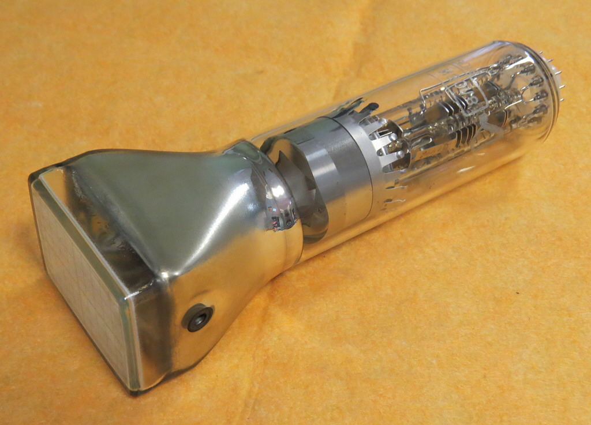
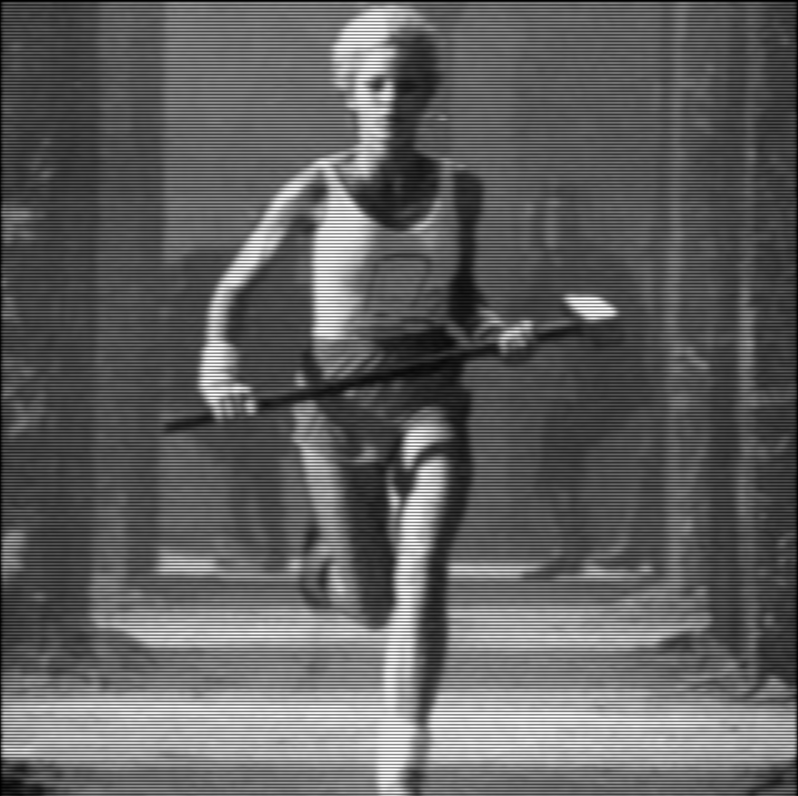
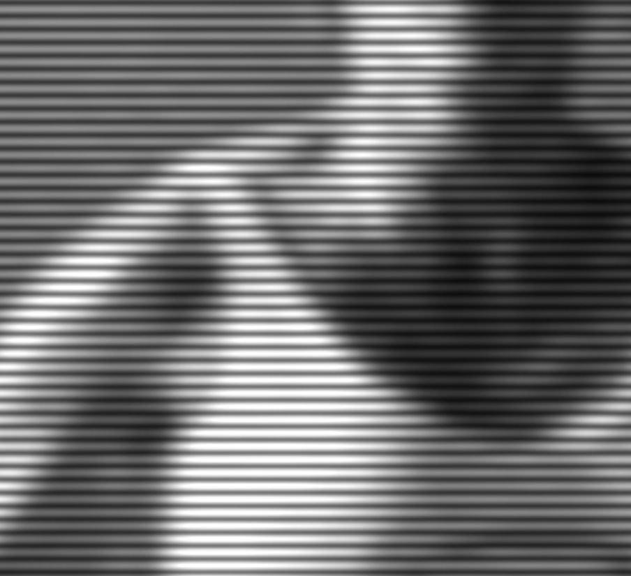
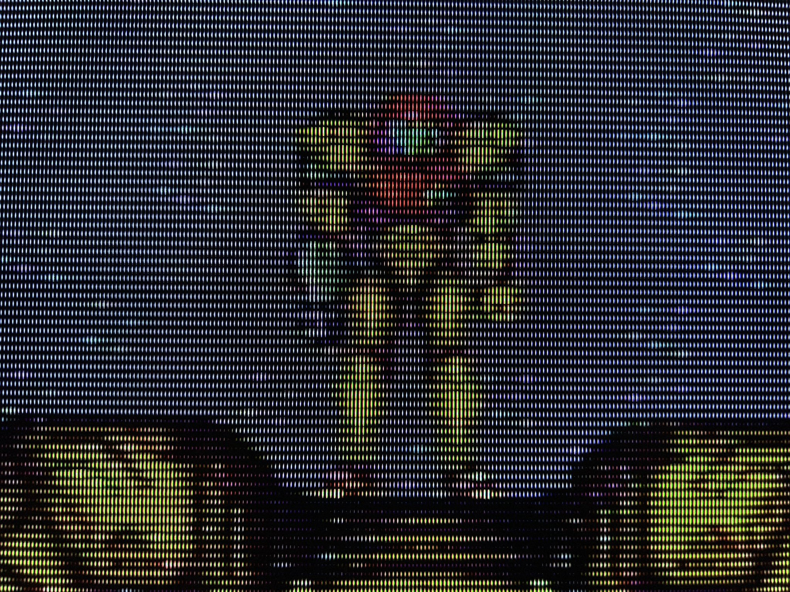

Simulating a CRT TV with C++ and OpenGL
With the aid of the oscilloscope simulator we built in a past blog post, we will now build CRT TV simulator.
CRT (cathode-ray tube) TVs were ubiquitous up until around 2010 when they were superseded by LCD technology. Even though LCD screens replaced them, in the beginning there were many sacrifices to be made in terms of image quality, and only recently OLED technology is able to to reproduce some of the best qualities of CRT TVs, such as the contrast ratio and small response times. Unfortunately, CRT TV's Achilles heel was its big size and weight, a consequence of the vacuum tube that contained the electron guns. 
How a CRT TV works
The principle on which CRT TVs work is basically the same as that of an oscilloscope; the part of the glass vacuum tube that forms the screen is coated with a phosphor, an organic material that gets excited when struck by the electron beam, emitting light for a brief period of time. The beam can be targeted with high precision using a so-called deflection yoke, a set of electromagnets. The beam intensity can also be controlled.
Now, to actually get an image on screen, the electron beam is moved by the deflection yoke in such a way so as to scan the screen horizontally and vertically from the top left to the bottom right, as shown in the figure below.  As you can see, the beam travels continuously from left to right, while vertically it jumps to discrete positions. In the animation below you can see a slowed down simulation of the beam scanning the screen.
Color CRT TVs are slightly more complicated. Usually they have 3 electron beams, and the screen is coated with red, green, and blue colored phosphors. Using a patterned screen (e.g. a metal plate with tiny holes), the beams can be focused on the appropriately colored phosphors, and the combination of the different colors produces color images. In this blog post we will only simulate black and white CRT TVs, although I'll outline what steps would need to be taken to implement a color simulation.
Implementing the CRT simulation
In this post we explored how we could visualize audio using an oscilloscope simulation in that post, I included a link to sdl_tone_oscillator where you can play with the tone generation and visualization. To guide the electron beam I defined a callback:
void signal_generator(double t, double* x, double* y);
which takes the current time in seconds as input, and outputs the x and y coordinates. To build a callback that will move the beam from left to right continuously and from top to bottom discretely, we need to think how the beam coordinates relate to time. First of all, we observe that the both the horizontal and vertical movements of the beam are periodic. It's then important to define the different frequencies involved in these movements. First of all, we set the refresh rate of the screen to 60Hz, and define the vertical resolution to be 240 lines, a common video resolution also known as 240p (do note that 240p can also actually refer to different number of lines, close to 240). Using these definitions, the horizontal frequency can be calculated as 240x60Hz, or 14.4kHz. If we multiply time by 14.4kHz, this will give us the number of lines rendered in that time. The fractional part of that number will give us the percentage of the line already traveled. If we mod the number of lines with the number of lines in a frame, i.e. 240, this will give us the current line number. Putting all together, we have:
void crt_call(void* userdata, double t, double* x, double* y, double* z) { double* intensities = (double*) userdata; double f = 60.0 * 240.0 * t; double xp = f - int(f); int line = int(f) % 240; *x = 2.0 * (xp - 0.5); *y = -(line - 120.0) / 120.0; *z = intensities[240 * line + int(xp*240.0)]; }
Note that the coordinates are taken to go from -1 to 1, and also that in contrast to the oscilloscope simulation where we only had to return the x and y coordinates, here we use the z coordinate as the intensity. The beam shader is also slightly modified to incorporate this change; the beam coordinate now is three-dimensional with the z coordinate, the intensity of the beam, being interpolated linearly similarly to the x and y coordinates and subsequently multiplying the overall intensity in the pixel shader.
Using the simulation, we can load a black and white image to visualize on our simulated CRT TV!  We can zoom-in for some glorious scanline close-up! 
Conclusion
From the oscilloscope simulation we built previously we could build a neat black and white CRT TV simulation. This was quite simple as we only needed to come up with an expression for the beam coordinates as a function of time. Actual CRT TVs were a bit more complicated, with signals including what is known as horizontal and vertical sync pulses to align the beam/picture properly. The CRT TV simulation might actually be overkill for simulating the CRT effect, which might be desirable for playing retro games, see e.g. CRT View or Mike Chi's upcoming RetroTINK upscaler.  Nonetheless, if someone wanted to simulate a color CRT TV using the method described in this post, I think the easiest way would be pass the color instead of the beam intensity, thus making the beam points 5d (2d spatial and 3d color). Then, a mask texture (i.e. 0 or 1 letting light through) similar to an aperture grill or shadow mask should be applied to each color channel separately, where the mask is shifted spatially for each channel appropriately. Optionally, a bit of horizontal blur should be applied to simulate some color bleed from the shadow mask, or the shadow mask should be pre-blurred instead.